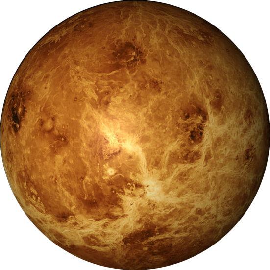
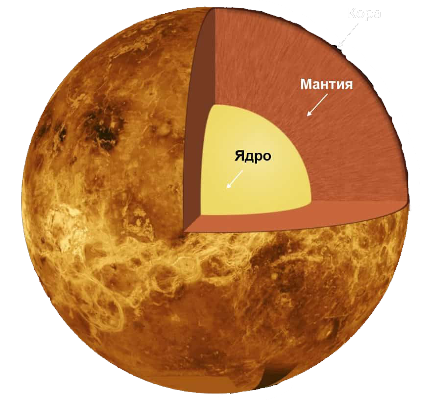

Венера
выоаролв

выоаролв
Вене́ра — вторая по удалённости от Солнца планета Солнечной системы, наряду с Меркурием, Землёй и Марсом принадлежащая к семейству планет земной группы. Названа в честь древнеримской богини любви Венеры. По ряду характеристик, например, по массе и размерам, Венера считается «сестрой» Земли. Венерианский год составляет 224,7 земных суток. Она имеет самый длинный период вращения вокруг своей оси (243 земных суток) среди всех планет Солнечной системы и вращается в направлении, противоположном направлению вращения большинства планет.
выоаролв
Венера не имеет естественных спутников. Это третий по яркости объект на небе Земли, после Солнца и Луны. Венера имеет плотную атмосферу, состоящую более чем на 96 % из углекислого газа. Атмосферное давление на поверхности планеты в 92 раза больше, чем на поверхности Земли, и примерно равно давлению воды на глубине 900 метров.Венера имеет плотную атмосферу, состоящую более чем на 96 % из углекислого газа. Атмосферное давление на поверхности планеты в 92 раза больше, чем на поверхности Земли, и примерно равно давлению воды на глубине 900 метров.
выоаролв
Между Венерой и Землей наблюдается много сходства, поэтому соседку часто именуют сестрой Земли. По массе – 4.8866 х 10^24 кг (81.5% от земной), поверхностная площадь – 4.60 х 10^8 км2 (90%), а объем – 9.28 х 10^11 км3 (86.6%).
выоаролв
Расстояние от Солнца до Венеры достигает 0.72 а. е. (108 000 000 км), а мир практически лишен эксцентриситета. Ее афелий достигает на 108 939 000 км, а перигелий – 107 477 000 км. Так что можно считать, что это наиболее круговой орбитальный путь среди всех планет. На нижнем фото удачно продемонстрировали сравнение размеров Венеры и Земли. Когда Венера располагается между нами и Солнцем, то подходит к Земле ближе всех планет – 41 млн. км. Подобное случается раз в 584 дней. На орбитальный путь тратит 224.65 дней
выоаролв
Состав и поверхность планеты Венера
выоаролв

выоаролв
Полагают, что внутренняя структура напоминает земную с ядром, мантией и корой. Ядро должно быть хотя бы частично в жидком состоянии, потому что обе планеты остывали практически одновременно. Но о различиях говорит тектоника плит. Кора Венеры слишком прочная, что привело к уменьшению тепловой потери. Возможно, это стало причиной отсутствия внутреннего магнитного поля. Изучите строение Венеры на рисунке.
выоаролв
На создание поверхности повлияла вулканическая активность. На планете присутствует примерно 167 крупных вулканов (больше, чем на Земле), высота которых превосходит 100 км. Их присутствие базируется на отсутствии тектонического движения, из-за чего мы смотрим на древнюю кору. Ее возраст оценивается в 300-600 миллионов лет.
выоаролв
Есть мнение, что вулканы все еще могут извергать лаву. Советские миссии, а также наблюдения ЕКА подтвердили наличие грозовых штормов в атмосферном слое. На Венере нет привычных осадков, поэтому молния способна создаваться вулканом.
выоаролв
Также отметили периодический рост/спад количества диоксида серы, что говорит в пользу извержений. ИК-обзор улавливает появление горячих точек, намекающих на лаву. Можно заметить, что поверхность идеально сберегает кратеры, которых насчитывают примерно 1000. Могут достигать 3-280 км в диаметре.
выоаролв
Более мелких кратеров вы не найдете, потому что небольшие астероиды просто сгорают в плотной атмосфере. Чтобы добраться до поверхности, необходимо превосходить по диаметру 50 метров.
выоаролв
Интересные факты о планете Венера
- День длится дольше года
- На ось вращения (сидерический день) уходит 243 дней, а орбитальный путь охватывает 225 дней. Солнечный день длится 117 дней.
выоаролв
- Вращается в противоположной направленности
- Венера бывает ретроградной, то есть вращается в обратную сторону. Возможно, в прошлом произошло столкновение с крупным астероидом. Также отличается отсутствием спутников.
выоаролв
- На втором месте по яркости в небе
- Для земного наблюдателя ярче Венеры лишь Луна. С величиной от -3.8 до -4.6 планета настолько яркая, что периодически показывается посреди дня.
выоаролв
- Атмосферное давление в 92 раза больше земного
- Хотя по размеру они похожи, но поверхность Венеры не такая кратерная, так как плотная атмосфера стирает входящие астероиды. Давление на ее поверхности сопоставимо с тем, что ощущается на большой глубине.
выоаролв
- Венера – земная сестра
- Разница их диаметров – 638 км, а масса Венеры достигает 81.5% земной. Также сходятся по структуре.
выоаролв
- Именовали Утренней и Вечерней Звездой
- Древние люди считали, что перед ними два разных объекта: Люцифер и Веспер (у римлян). Дело в том, что ее орбита обгоняет земную и планета появляется ночью или днем. Ее детально описали майя в 650 г. до н.э.
выоаролв
- Самая раскаленная планета
- Температурный показатель планеты поднимается до 462°C. Венера не наделена примечательным осевым наклоном, поэтому лишена сезонности. Плотный атмосферный слой представлен углекислым газом (96.5%) и удерживает тепло, создавая парниковый эффект.
выоаролв
- Изучение завершилось в 2015 году
- В 2006 году к планете отправили аппарат Венера-Экспресс, который вышел на ее орбиту. Изначально миссия охватывала 500 дней, но потом ее растянули до 2015 года. Ему удалось отыскать более тысячи вулканов и вулканических центров с протяжностью в 20 км.
выоаролв
- Первая миссия принадлежала СССР
- В 1961 году к Венере отправился советский зонд Венера-1, но контакт быстро оборвался. То же самое произошло с американским Маринер-1. В 1966 году СССР умудрились опустить первый аппарат (Венера-3). Это помогло рассмотреть поверхность, скрытую за плотной кислотной дымкой. Продвинуться в исследованиях удалось с появлением радиографического картирования в 1960-х гг. Полагают, что в прошлом планета обладала океанами, к оторые испарились из-за роста температуры.